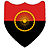
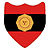
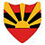
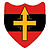
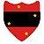
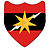
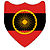
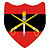

Indian Army
Bhartiya Sena
Indian Army
crest of Indian Army
Founded : 1 April 1895 ;
123 years ago
Country :  India
India
Size : 1,237,117 active personnel
960,000
reserve personnel
136
aircrafts
Parts of : Indian Armed Forces
Headquaters : New Delhi
Colors :GoldRedBlack
Annivarsary : 15 January
Websites : indianarmy.nic.in
The Indian army is land based branch and largest component of Indian Armed Forces The prsident of indoa is supreme commander of the indian army, and it is commanded by the chief of Army staff (CAOS), who is a four-star general. Two officers have been conferred with the rank of field marshal,a five-star rank ,which is a ceremonial position of great honour. The Indian Army originated from the armies of the East India Company, which eventually became British India Army and the armies of the princely states, which finally became the national army after Independence. The units and regiments of the Indian Army have diverse histories and have participated in a number of battles and campaigns across the world, earning a large number of Battle and theatre honours before and after independence.
The primary mission of the indian army is to ensure national security and national unity, defending the nation from external aggression and internal therats, and ,maintaining peace and security within its borders . It conducts humanitarian rescue operations during natural calamities and other disturbances, like operation surya hope, and can also be requisitioned by the government to cope with internal threats. It is a major component of national power alongside the Indian Navy and the Indian air force The army has been involved in four wars with neighbouring Pakistan and one with China. Other major operations undertaken by the army include: operation vijay,operation meghdoot and operation cactus. Apart from conflicts, the army has conducted large peace time exercises like operation Brasstacks and Exercise Shoorveer, and it has also been an active participant in numerous United Nations peacekeeping missions including those in: Cyprus, Lebanon, Congo, Angola, Cambodia, Vietnam, Namibia, El Salvador, Liberia, Mozambique and Somalia.
The Indian Army has a regimental system, but is operationally and geographically divided into seven commands, with the basic field formation being a division. It is an all-volunteer force and comprises more than 80% of the country's active defence personnel. It is the 2nd largest standing army in the world, with 1,237,117 active troops and 960,000 reserve troops.[11][12] The army has embarked on an infantry modernisation program known as Futuristic Infantry Soldier As a System (F-INSAS) , and is also upgrading and acquiring new assets for its armoured, artillery and aviation branches.
History
British India Army
No. 4 (Hazara) Mountain Battery with RML7 pounder
"Steel Gun" Mountain
Gun in Review Order.Left to
right Naick, Havaldar, Subadar (Sikhs) and Gunner
(Punjabi
Musalman)circa 1895.
A Military Department was created within the Government of the East India Company in Kolkata n the year 1776. Its main function was to sift and record orders relating to the Army that were issued by various Departments of the East India Company for the territories under its control.
With the Charter Act of 1833, the Secretariat of the Government of the East India Company was reorganised into four Departments, including a Military Department. The army in the Presidencies of Bengal,Bombayand Madaras functioned as respective Presidency Armies until 1 April 1895 when they were unified into a single Indian Army For administrative convenience, it was divided into four commands at that point, namely Punjab (including the North West Frontier), Bengal, Madras (including Burma) and Bombay (including Sind, Quetta and Aden).
The British Indian Army was a critical force for the primacy of the British Empire both in India and across the world. Besides maintaining the internal security of the British Raj the Army fought in many other theatres: the Anglo-Burmese Wars, First and Second Anglo-Sikh Wars, First, Second and Third Anglo-Afghan Wars, First and Second Opium Wars in China, Abyssinia, and the Boxer Rebellion in China.
French postcard depicting the arrival of 15th Sikh
Regiment in
France during World War I. The
postcard reads,"Gentlemen of India marching to
chasten theGerman
hooligans."
In the 20th century, the Indian Army was a crucial adjunct to the British forces in both world wars. 1.3 million Indian soldiers served in World War I (1914–1918) with the Allies, in which 74,187 Indian troops were killed or missing in action.[22] In 1915 there was a mutiny by Indian soldiers in Singapore. The United Kingdom made promises of self-governance to the Indian National Congress in return for its support but reneged on them after the war, following which the Indian Independence movement gained strength
The Indianisation of the British Indian Army began with the formation of the Prince of Wales Royal Indian Military College at Dehradun in March 1912 with the purpose of providing education to the scions of aristocratic and well-to-do Indian families, and to prepare selected Indian boys for admission into the Royal Military College, Sandhurst.Indian officers were given a King's commission after passing out and were posted to one of the eight units selected for Indianisation. Because of the slow pace of Indianisation, with just 69 officers being commissioned between 1918 and 1932, political pressure was applied leading to the formation of the Indian Military Academy Academy in 1932 and greater numbers of officers of Indian origin being commissioned.
In World War ll Indian soldiers fought alongside the Allies. In 1939, British officials had no plan for expansion and training of Indian forces, which comprised about 130,000 men (in addition there were 44,000 men in British units in India in 1939). Their mission was internal security and defence against a possible Soviet threat through Afghanistan. As the war progressed, the size and role of the Indian Army expanded dramatically, and troops were sent to battlefronts as soon as possible. The most serious problem was lack of equipment.[24] Indian units served in Burma, where in 1944–45, five Indian divisions were engaged along with one British and three African divisions. Even larger numbers operated in the Middle East. Some 87,000 Indian soldiers died in the war. By the end of the war it had become the largest volunteer army in history, rising to over 2.5 million men in August 1945.
In the African and Middle-Eastern Campaigns, captured Indian troops were given a choice to join the German Army to eventually "liberate" India from Great Britain instead of being sent to POW camps These men, along with Indian students who were in Germany when the war broke out, made up what was called the Free India Legion. They were originally intended as pathfinders for German forces in Asia, but were soon sent to help guard the Atlantic Wall. Few who were part of the Free India Legion ever saw any combat, and very few were ever stationed outside Europe. At its height the Free India Legion had over 3,000 troops in its ranks
Indian POWs also joined the Indian National Army which was allied with the Empire of Japan. It was raised by a former colonel of the British Indian Army (Gen) Mohan Singh, but later led by Netaji Subhas Chandra Bose and Rash Bihari Bose. With the fall of Singapore in 1942, about 40,000 Indian soldiers were captured. They were given a choice and over 30,000 joined the Indian National Army. Those who refused became POWs and were mostly shipped to New Guinea. After initial success it was defeated along with the Japanese, but it had a huge impact on the Indian independence movement. Similar organisations were also formed in Germany and Japan.
Independence
Upon independence and subsequent Partion of India in 1947, four of the ten Gurkha regiments were transferred to the British Army. The rest of the British Indian Army was divided between the newly created nations of India and Pakistan. The Punjab Boundary Force, which had been formed to help police the Punjab during the partition period, was disbanded,[29] and Headquarters Delhi and East Punjab Command was formed to administer the area.
The departure of virtually all senior British officers following independence and their replacement by Indian officers meant many of the latter held acting ranks several ranks above their substantive ones. For instance, S. M. Shrinagesh, the ground forces commander of Indian forces during the first Indo-Pak War of 1947-49 (and the future third COAS) was first an acting major-general and then an acting lieutenant-general during the conflict while holding the substantive rank of major, and only received a substantive promotion to lieutenant-colonel in August 1949.[30] Gopal Gurunath Bewoor, the future ninth COAS, was an acting colonel at his promotion to substantive major from substantive captain in 1949, while future lieutenant-general K. P. Candeth was an acting brigadier (substantive captain) at the same time.
Army Day is celebrated on 15 January every year in India, in recognition of Lieutenant General K. M. Cariappa's taking over as the first Commander-in-Chief of the Indian Army from General Sir Francis Butcher, the last British Commander-in-Chief of India, on 15 January 1949. With effect from 26 January 1950, the date India became a republic, all active-duty Indian Army officers formerly holding the King's Commission were recommissioned and confirmed in their substantive ranks.
Conflics and Wars
First Kashmir War (1947)
Immediately after independence, tensions between India and Pakistan began to boil over, and the first of three full-scale wars between the two nations broke out over the then princely state of kashmir The Maharaja of Kashmir wanted to have a standstill position. Since Kashmir was a Muslim majority state, Pakistan wanted to make Kashmir a Pakistani territory. As a result, Pakistan invaded Kashmir on 22 October 1947, causing Maharaja Hari Singh to look to India, specifically to Lord Mountbatten of Burma, the governor general, for help. He signed the Instrument of Accession to India on 26 October 1947. Indian troops were airlifted to Srinagar from 27 October dawn onwards.[33] This contingent included General Thimayya who distinguished himself in the operation and in the years that followed became a Chief of the Indian Army. An intense war was waged across the state and former comrades found themselves fighting each other. Pakistan suffered significant losses. Its forces were stopped on the line formed which is now called LOC (Line of Control).[citation needed] An uneasy UN sponsored peace returned by the end of 1948 with Indian and Pakistani soldiers facing each other directly on the Line of Control, which has since divided Indian-held Kashmir from Pakistan-held Kashmir. A number of UN resolutions (38–47) were passed calling for a plebiscite to be held in Kashmir to determine accession to India or Pakistan only after Pakistan withdrew its army from Kashmir.[34] A precondition to the resolution was for Pakistan and India to return to a state of "as was" prior to the conflict. Pakistan would withdraw all tribesmen and Pakistani nationals brought in to fight in Kashmir. With Pakistan refusing to pull back there could be no further dialogue on fulfilling the UN resolution.[35][34] Tensions between India and Pakistan, largely over Kashmir, have never been entirely eliminated.
Annexation of Hyderabad (1948)Major General El Edroos (at right) offers his surrender of the Hyderabad State Forces to Major General (later Army Chief) J.N. Chaudhuri at Secunderabad After the partition of India, the State of Hyderabad, a princely state under the rule of a Nizam, chose to remain independent. The Nizam, refused to accede his state to the Union of India. The following stand-off between the Government of India and the Nizam ended on 12 September 1948 when India's then deputy Prime Minister Sardar Vallabhbhai Patel ordered Indian troops to secure the state. During five days of fighting, the Indian Army, backed by an Indian Air Force squadron of Hawker Tempest aircraft, routed the Hyderabad State forces. Five Indian Army infantry battalions and one armoured squadron were engaged in the operation. The following day, the State of Hyderabad was proclaimed as a part of the Union of India. Major General Joyanto Nath Chaudhuri, who led the Operation Polo and accepted the surrender of the Nizam's forces on 18 September 1948, was appointed the military governor of Hyderabad (1948–1949) to restore law and order.
Medical assistance during Korean War (1950–1953)During the Korean War, India sent the 60th Indian (Parachute) Field Ambulance unit to aid the UN troops fighting against the Chinese and North Korean invasion of South Korea, though they decided against sending combat forces. The 60th PFA was included in the 1st Commonwealth Division. In the aftermath of the war, an Indian infantry brigade formed the Custodian Force of India as some of the soldiers were also sent to Korea as part of the Neutral Nations Repatriation Committee to assist in the exchange of prisoners of war. The NNRC was commanded by Lt Gen KS Thimayya
Annexation of Goa, Daman and Diu (1961)Even though the British and French vacated all their colonial possessions in the Indian subcontinent, Portugal refused to relinquish control of its Indian colonies of Goa, Daman and Diu. After repeated attempts by India to negotiate with Portugal for the territory were spurned by Portuguese prime minister and dictator, António de Oliveira Salazar, India launched Operation Vijay on 12 December 1961 to take Goa from the Portuguese. A small contingent of its troops entered Goa, Daman, and Diu to capture and secure the territory. After a brief conflict, in which 31 Portuguese soldiers were killed, the Portuguese Navy frigate NRP Afonso de Albuquerque destroyed, and over 3,000 Portuguese captured, Portuguese General Manuel António Vassalo e Silva surrendered to Maj Gen KP Candeth (Kunhiraman Palat Kandoth) of the Indian Army, after twenty-six hours. Goa, Daman and Diu became a part of the Republic of India.
Sino-Indian War (1962)The cause of this war was a dispute over the sovereignty of the widely separated Aksai Chin and Arunachal Pradesh border regions. Aksai Chin, claimed by India to belong to Kashmir, and by China to be part of Xinjiang, contains an important road link that connects the Chinese regions of Tibet and Xinjiang. China's construction of this road was one of the triggers of the conflict.
Small-scale clashes between Indian and Chinese forces broke out as India insisted on the disputed McMahon Line being regarded as the international border between the two countries. Chinese troops claimed not to have retaliated to the cross-border firing by Indian troops, despite sustaining losses. China's suspicion of India's involvement in Tibet created more rifts between the two countries.
In 1962, the Indian Army was ordered to move to the Thag La ridge located near the border between Bhutan and Arunachal Pradesh and about three miles (5 km) north of the disputed McMahon Line. Meanwhile, Chinese troops had also made incursions into Indian-held territory, and tensions between the two reached a new high when Indian forces discovered a road constructed by China in Aksai Chin. After a series of failed negotiations, the People's Liberation Army attacked Indian Army positions at the Thag La ridge. This move by China caught India by surprise and by 12 October, Nehru gave orders for the Chinese to be expelled from Aksai Chin. However, poor co-ordination among various divisions of the Indian Army, and the late decision to mobilise the Indian Air Force in vast numbers, gave China a crucial tactical and strategic advantage over India. On 20 October, Chinese soldiers attacked India in both the North-West and North-Eastern parts of the border and captured vast portions of Aksai Chin and Arunachal Pradesh.
As the fighting moved beyond disputed territories, China called on the Indian government to negotiate, however India remained determined to regain lost territory. With no peaceful agreement in sight, China unilaterally withdrew its forces from Arunachal Pradesh. The reasons for the withdrawal are disputed with India claiming various logistical problems for China and diplomatic support from the United States, while China stated that it still held territory it had staked diplomatic claim over. The dividing line between the Indian and Chinese forces was named the
The poor decisions made by India's military commanders and, its political leadership, raised several questions. The Henderson-Brooks & Bhagat committee was soon set up by the Government of India to determine the causes of the poor performance of the Indian Army. Its report criticised the decision not to allow the Indian Air Force to target Chinese transport lines out of fear of a Chinese aerial counter-attack on Indian civilian areas. Much of the blame was also targeted at the incompetence of then-Defence Minister, Krishna Menon who resigned from his post soon after the war ended. Despite frequent calls for its release, the Henderson-Brooks report still remains classified.[38] Neville Maxwell has written an account of the war.
Indo-Pakistani War of 1965
The Indian Army captured a Police Station in
Lahore, Pakistan after winning
the of Burki in
the 1965 War. It was left by them after the
signing
of the Tashkent Declaration.
A second confrontation with Pakistan took place in 1965. Although the war is described as inconclusive, India had the better of the war and was a clear winner in tactical and strategic terms. Pakistani President Ayub Khan launched Operation Gibraltar in August 1965, during which several Pakistani paramilitary troops infiltrated into Indian-administered Kashmir and attempt to ignite an anti-India agitation in Jammu and Kashmir. Pakistani leaders believed that India, which was still recovering from the disastrous Sino-Indian War, would be unable to deal with a military thrust and a Kashmiri rebellion. India reacted swiftly and launched a counter offensive on Pakistan. Pakistan launched Operation Grand Slam in reply on 1 September, invading India's Chamb-Jaurian sector. In retaliation, the Indian Army launched a major offensive throughout its border with Pakistan, with Lahore as its prime target.
Initially, the Indian Army met with considerable success in the northern sector. After launching prolonged artillery barrages against Pakistan, India was able to capture three important mountain positions in Kashmir. By 9 September, the Indian Army had made considerable in-roads into Pakistan. India had its largest haul of Pakistani tanks when the offensive of Pakistan's 1st Armoured Division was blunted at the Battle of Asal Uttar, which took place on 10 September near Khemkaran.The biggest tank battle of the war came in the form of the Battle of Chawinda, the largest tank battle in history after World War II. Pakistan's defeat at the Battle of Asal Uttar hastened the end of the conflict.
At the time of ceasefire declaration, per neutral sources, India reported casualties of about 3,000. On the other hand, it was estimated that more than 3,800 Pakistani soldiers were killed in the battle.]About 200-300 Pakistani tanks were either destroyed or captured by India. India lost a total of 150-190 tanks during the conflict. The decision to return to pre-war positions, following the Tashkent Declaration, caused an outcry among the polity[who?] in New Delhi. It was widely believed that India's decision to accept the ceasefire was due to political factors, and not military, since it was facing considerable pressure from the United States and the UN to stop hostilities
1967 Sino-Indian ConflictThe 1967 Sino-Indian skirmish, also known as the Cho La incident, was a military conflict between Indian troops and members of the Chinese People's Liberation Army who had infiltrated on 1 October 1967 in Sikkim, then a protectorate of India. On 10 October, both sides clashed again. Defence Minister Sardar Swaran Singh assured the Indian people that the government was taking care of developments along the border. In the aftermath of the conflict Indian losses were 88 killed, and 163 wounded, while Chinese casualties were 300 killed and 450 wounded in Nathula, and 40 in Chola. The Chinese Army left Sikkim after being defeated by Indian troops.
Operation against the Naxalites during 1971Under the supervision of Indira Gandhi during the president's rule in 1971, the Indian Army and the Indian police launched Operation Steeplechase, a gigantic "counter-insurgency" operation against the Naxalites, which resulted in the death of hundreds of Naxalites and the imprisonment of more than 20,000 suspects and cadres including senior leaders.The army was also assisted by a brigade of para commandos and the Indian paramilitary. The operation was organised in October 1969, and Lieutenant General J.F.R. Jacob was enjoined by Govind Narain, the home secretary of India, that "there should be no publicity and no records" and Jacob's request to be presented with written orders was also repudiated by Sam Manekshaw
Bangladesh Liberation War of 1971Pakistan's Lt. Gen. A. A. K. Niazi signing the
instrument of surrender in
Dhaka on 16 Dec'
1971, in the presence of India's Lt. Gen. Aurora.
Standing
behind them are officers of India's
Army, Navy and Air Force.
An independence movement broke out in East Pakistan which was crushed by Pakistani forces. Due to large-scale atrocities against them, thousands of Bengalis took refuge in neighbouring India causing a major refugee crisis there. In early 1971, India declared its full-support for the Bengali rebels, known as Mukti Bahini, and Indian agents were extensively involved in covert operations to aid them.
On 20 November 1971, the Indian Army moved the 14 Punjab Battalion 45 Cavalry into Garibpur, a strategically important town near India's border with East Pakistan, and successfully captured it. The following day, more clashes took place between Indian and Pakistani forces. Wary of India's growing involvement in the Bengali rebellion, the Pakistan Air Force (PAF) launched a preemptive strike on 10 Indian air bases at: Srinagar, Jammu, Pathankot, Amritsar, Agra, Adampur, Jodhpur, Jaisalmer, Uttarlai and Sirsa at 17:45 hours on 3 December. However, this aerial offensive failed to accomplish its stated objectives, and gave India an excuse to declare a full-scale war against Pakistan the same day. By midnight, the Indian Army, accompanied by the Indian Air Force, launched a major three-pronged assault into East Pakistan. The Indian Army won several battles on the eastern front including the decisive battle of Hilli, which was the only front where the Pakistani Army was able to build up considerable resistance. The operation also included a battalion-level airborne operation on Tangail, which resulted in the capitulation of all resistance within five days. India's massive early gains were attributed largely to the speed and flexibility with which Indian armoured divisions moved across East Pakistan.
Pakistan launched a counter-attack against India on the western front. On 4 December 1971, the A company of the 23rd Battalion of India's Punjab Regiment detected and intercepted the movement of the 51st Infantry Brigade of the Pakistani Army near Ramgarh, Rajasthan. The battle of Longewala ensued during which the A company, though being outnumbered, thwarted the Pakistani advance until the Indian Air Force directed its fighters to engage the Pakistani tanks. By the time the battle had ended, 38 Pakistani tanks and 100 armoured vehicles were either destroyed or abandoned. About 200 Pakistani troops were killed in action during the battle while only two Indian soldiers lost their lives. Pakistan suffered another major defeat on the western front during the Battle of Bastar which was fought from 4 December to the 16th. By the end of the battle, about 66 Pakistani tanks were destroyed and 40 more were captured. In return, Pakistani forces were able to destroy only 11 Indian tanks. None of the many Pakistani offensives on the western front materialised.[58] By 16 December, Pakistan had lost sizeable territory on both the eastern and western fronts.
Under the command of Lt. General J.S. Arora, the three corps of the Indian Army, which had invaded East Pakistan, entered Dhaka and forced Pakistani forces to surrender on 16 December 1971, one day after the conclusion of the battle of Basantar. After Pakistan's Lt General A A K Niazi signed the Instrument of Surrender, India took more than 90,000 Pakistani prisoners of war. By the time of the signing, 11,000 Pakistani soldiers were killed-in-action while India suffered 3,500 battle-related deaths.[46] In addition, Pakistan lost 220 tanks during the battle compared to India's 69
In 1972, the Simla Agreement was signed between the two countries and tensions simmered. However,there were occasional spurts in diplomatic tensions which culminated in increased military vigilance on both sides.
Siachen conflict (1984)The Siachen Glacier, though a part of the Kashmir region, was not officially demarcated on maps prepared and exchanged between the two sides in 1947. As a consequence, prior to the 1980s, neither India nor Pakistan maintained any permanent military presence in the region. However, Pakistan began conducting and allowing a series of mountaineering expeditions to the glacier beginning in the 1950s. By the early 1980s, the Government of Pakistan was granting special expedition permits to mountaineers and United States Army maps deliberately showed Siachen as a part of Pakistan. This practice gave rise to the contemporary meaning of the term oropolitics.
A memorial at the headquarters of the
Dogra Regiment of the Indian Army
in
the remembrance of members of the
regiment who died or served in the
Siachen Conflict
India, possibly irked by these developments, launched Operation Meghdoot in April 1984. An entire battalion of the Kumaon Regiment was airlifted to the glacier. Pakistani forces responded quickly and clashes between the two followed. The Indian Army secured the strategic Sia La and Bilafond La mountain passes, and by 1985 more than 1,000 square miles (2,600 km2) of territory 'claimed' by Pakistan was under Indian control. The Indian Army continues to control all the Siachen Glacier and its tributary glaciers. Pakistan made several unsuccessful attempts to regain control over Siachen. In late 1987, Pakistan mobilised about 8,000 troops and garrisoned them near Khapalu, aiming to capture Bilafond La. However, they were repulsed by Indian Army personnel guarding Bilafond. During the battle, about 23 Indian soldiers lost their lives, while more than 150 Pakistani troops perished. Further unsuccessful attempts to reclaim positions were launched by Pakistan in 1990, 1995, 1996 and 1999, most notably in Kargil that year.
India continues to maintain a strong military presence in the region, despite extremely inhospitable conditions. The conflict over Siachen is regularly cited as an example of mountain warfare. The highest peak in the Siachen glacier region, Saltoro Kangri, could be viewed as strategically important for India because of its immense altitude which could enable the Indian forces to monitor some Pakistani or Chinese movements in the immediate area. Maintaining control over Siachen poses several logistical challenges for the Indian Army. Several infrastructure projects were constructed in the region, including a helipad at 21,000 feet (6,400 m) above the sea level. In 2004, the Indian Army was spending an estimated US$2 million a month to support its personnel stationed in the region
Counter-insurgency activitiesThe Indian Army has played a crucial role in the past, fighting insurgents and terrorists within the nation. The army launched Operation Blue Star and Operation Woodrose in the 1980s to combat Sikh insurgents. The army, along with some paramilitary forces, has the prime responsibility of maintaining law and order in the troubled Jammu and Kashmir region, led specifically by the Northern Command. The Indian Army also sent a contingent to Sri Lanka in 1987 as a part of the Indian Peace Keeping Force. Allied with the work of the Northern Command and its peace time activities is "North Tech Symposium", an annual event, with the aim of providing a viable platform for knowledge diffusion on relevant, contemporary military technologies available as commercial off the shelf (COTS) worldwide. The Indian Army also successfully conducted Operation Golden Bird in 1995 for counter-insurgency in northeast India
Kargil war (1999)In 1998, India carried out nuclear tests and a few days later, Pakistan responded with more neuclear test giving both countries Nuclear Deterrence capability, although India had tested one hydrogen bomb which Pakistan lacked. Diplomatic tensions eased after the Lahore Summit was held in 1999. However, the sense of optimism was short-lived since in mid-1999 Pakistani paramilitary forces and Kashmiri insurgents captured the deserted, but strategic, Himalayan heights in the Kargil district of India. These had been vacated by the Indian army during the onset of the inhospitable winter and were supposed to be reoccupied in spring. The regular Pakistani troops who took control of these areas received important support, both in the form of arms and supplies, from Pakistan. Some of the heights under their control, which also included the Tiger Hill, overlooked the vital Srinagar-Leh Highway (NH 1A), Batalik and Dras.
Once the scale of the Pakistani incursion was realised, the Indian Army quickly mobilised about 200,000 troops and Operation Vijay was launched. However, since the heights were under Pakistani control, India was at a clear strategic disadvantage. From their observation posts, the Pakistani forces had a clear line-of-sight to lay down indirect artillery fire on NH 1A, inflicting heavy casualties on the Indians. This was a serious problem for the Indian Army as the highway was its main logistical and supply route.Thus, the Indian Army's first priority was to recapture peaks that were in the immediate vicinity of NH 1A. This resulted in Indian troops first targeting the Tiger Hill and Tololing complex in Dras. This was soon followed by more attacks on the Batalik-Turtok sub-sector which provided access to Siachen Glacier. Point 4590, which had the nearest view of the NH 1A, was successfully recaptured by Indian forces on 14 June.
Indian soldiers on winning kargil war
Though most of the posts in the vicinity of the highway were cleared by mid-June, some parts of it near Drass witnessed sporadic shelling until the end of the war. Once the NH 1A area was cleared, the Indian Army turned to driving the invading force back across the Line of Control. The Battle of Tololing, among other assaults, slowly tilted the combat in India's favour. Nevertheless, some posts put up a stiff resistance, including Tiger Hill (Point 5140) that fell only later in the war. As the operation was fully under way, about 250 artillery guns were brought in to clear the infiltrators in the posts that were in the line-of-sight. At many vital points, neither artillery nor air power could dislodge the outposts manned by the Pakistan soldiers, who were out of visible range. The Indian Army mounted some direct frontal ground assaults which were slow and took a heavy toll given the steep ascent that had to be made on peaks as high as 18,000 feet (5,500 m). Two months into the conflict, Indian troops had slowly retaken most of the ridges they had lost;according to official count, an estimated 75%–80% of the intruded area, and nearly all high ground, was back under Indian control.
Following the Washington accord on 4 July, where Sharif agreed to withdraw Pakistani troops, most of the fighting came to a gradual halt, but some Pakistani forces remained in positions on the Indian side of the LOC. In addition, the United Jihad Council (an umbrella for all extremist groups) rejected Pakistan's plan for a climb-down, instead deciding to fight on. The Indian Army launched its final attacks in the last week of July; as soon as the Drass sub-sector had been cleared of Pakistani forces, the fighting ceased on 26 July. The day has since been marked as Kargil Vijay Diwas (Kargil Victory Day) in India. By the end of the war, India had resumed control of all the territory south and east of the Line of Control, as was established in July 1972 per the Shimla Accord. By the time all hostilities had ended, the number of Indian soldiers killed during the conflict stood at 527,while more than 700 regular members of the Pakistani Army were killed.
An Indian Army officer with a local at the UN
mission in Congo, 2013
India has been the largest troop contributor to UN missions since its inception. So far India has taken part in 43 Peacekeeping missions with a total contribution exceeding 160,000 troops and a significant number of police personnel having been deployed. In 2014 India is the third largest troop contributor [TCC] with 7,860 personnel deployed with ten UN Peacekeeping Missions of which 995 are police personnel, including the first Female Formed Police Unit under the UN. The Indian Army has undertaken numerous UN peacekeeping missions. As of 30 June 2014, 157 Indians have been killed during such operations. The Indian army has also provided paramedical units to facilitate the withdrawal of the sick and wounded.
Organisation
The troops are organized into 40 Divisions in 14 Corps.[103] Army headquarters is located in the Indian capital, New Delhi, and it is under the overall command of the Chief of Army Staff (COAS).
Command Structure
The army operates six operational commands and one training command.[104] Each command is headed by General Officer Commanding-in-Chief with the rank of Lieutenant General. Each command is directly affiliated to the Army HQ in New Delhi. These commands are given below in their correct order of raising, location (city) and their commanders. There is also the Army Training Command abbreviated as ARTRAC. Besides these, army officers may head tri-service commands such as the Strategic Forces Command and Andaman and Nicobar Command, as well as institutions like Integrated Defence Staff.
| Insignia | Name | Headquaters | Commander | Subordinate Units |
|---|---|---|---|---|
|  | Headquarters, Indian Army | New Delhi | 50th Independent Parachute Brigade – Agra | |
|  | Central Command | Lucknow | Lt General Balwant Singh Negi | I Corps — Currently assigned to South Western Comman |
|  | Eastern Command | Kolkata | Lt General Abhay Krishna |
|
|  | Northen Command | Udhampur | Lt General Ranbir Singh |
|
|  | Sourthen Command | Pune | Lt General Rabindranath Soni |
|
|  | South Western Command | Jaipur | Lt General Cherish Mathson |
|
|  | Western Command | Chandigarh | Lt General Surinder Singh |
|
|  | Army training command | Shimla | Lt General Manoj Mukund Naravane |
Combat arms
Not to be confused with the Field Corps mentioned above, the corps mentioned below are the functional divisions entrusted with specific pan-Army tasks. The Indian territorial army has battalions affiliated with different infantry regiments and some department units which are either from the Corps of Engineers, Army Medical Corps or the Army Service Corps. They serve as a part-time reserve. On 4 June 2017, the chief of staff announced that the Army was planning to open combat positions to women, who would first be appointed to positions in the military police.
| Name | Commander General | Center |
|---|---|---|
| Armoured Corps | The Armoured Corps Centre and School, Ahmednagar | |
| Regiment of Artillery | Lt General P K Srivastava, VSM | The School of Artillery, Devlali near Nasik |
| Corps of Army Air Defence | Lt General A K Sahgal, VSM | Gopalpur, Odisha |
| Army Aviation Corps | Lt General P K Bharali, VSM | Combat Army Aviation Training School, Nasik. |
| Corps of Engineers | The College of Military Engineering, Dapodi, Pune Madras Engineer Group, Bangalore Bengal Engineer Group, Roorkee Bombay Engineer Group, Khadki near Pune | |
| Corps of Signals | Military College of Telecommunication Engineering (MCTE), Mhow Two Signal Training Centres at Jabalpur and Goa. | |
| Mechanised Infantry | Ahmednagar | |
| Ordnance Corps | Lt General Amit Sarin AVSM, SM, VSM, ADC | Secunderabad |
Armoured forces
There are 65 Armoured Regiments in the Indian Army (including the PBG and 61st Cavalry). These include the following historic regiments dating back to the nineteenth century or earlier: 1st (Skinner's) Horse, the 2nd Lancers (Gardner's Horse), the 3rd Cavalry, the 4th (Hodson's) Horse, the 7th Light Cavalry, the 8th Light Cavalry, the 9th (Deccan) Horse, the 14th (Scinde) Horse, the 17th (Poona) Horse, the 15th Lancers, the 16th Light Cavalry, the 18th Cavalry, the 20th Lancers and the 21st (Central India) Horse. A substantial number of additional units designated as either "Cavalry" or "Armoured" Regiments have been raised since Independence.
Mechanised Infantry
The Mechanised Infantry is the newest Combat Arm of the Indian Army. Often referred to as "tomorrow's arm in today's Army", it is formed of two Regiments; The Brigade of the Guards and Mechanised infantry regiment and comprises 48 Mechanised Infantry Battalions in all. The brain-child of raising of this arm was that of Gen Krishnaswamy Sundarji, PVSM (28 April 1930 – 8 February 1999), who was the Chief of Army Staff of the Indian Army from 1986 to 1988. During the late 70s, as part of Indian Army modernisation, there was an urgent need to re-calibrate the Indian Mechanised Forces by forming of Mechanised Infantry units to further the shock-action, fire-power, flexibility and mobility of Armoured formations to include ground-holding ability. Thus, the Mechanised Infantry Regiment was born by careful selection of existing Infantry battalions based on operational performance. As the need for more Mechanised battalions grew, the elite Brigade of The Guards were also converted to the Mechanised profile. The two Regiments along with the Armoured Corps form part of the Indian Army's elite "Mechanised Forces".
Infantry
Soldiers of 99th Mountain Brigade's
2n Battalion, 5 Rifles, during Yudh
Abhyas 2013
Upon its inception, the Indian Army inherited the British Army's organisational structure, which is still maintained today. Therefore, like its predecessor, an Indian infantry regiment's responsibility is not to undertake field operations but to provide battalions and well trained personnel to the field formations. As such it is common to find battalions of the same regiment spread across several brigades, divisions, corps, commands, and even theatres. Like its British and Commonwealth counterparts, troops enlisted within the regiment are immensely loyal, take great pride in the regiment to which they are assigned, and generally spend their entire career within the regiment.
Most Indian Army infantry regiments recruit based on certain selection criteria, such as on the basis of region (for example, the Assam Regiment), caste/community (Jat Regiment), or religion (Sikh Regiment). Most regiments continue the eritage of regiments raised under the British Raj, but some have been raised after independence. Some regiments raised after independence have specialised in border defence, in particular the Ladakh Scouts, the Arunachal Scouts and the Sikkim Scouts.
Over the years there have been fears that troops' allegiance lay more with their regiments and the regions/castes/communities/religions from which they were recruited, as opposed to the union of India as a whole. Thus some "all India" or "all class" regiments have been created that recruit troops from all over India regardless of region, caste/community or religion, such as the Brigade of the Guards (which later converted to the Mechanised Infantry profile) and the Parachute Regiment.
Infantry regiments in the Indian Army are:| Regiment | Regimental Center | Raised |
|---|---|---|
| The Grenadiers | Jabalpur, Madhya Pradesh | 1778 |
| Sikkim Scouts | 2013 | |
| Sikh Regiment | Ramgarh Cantonment, Jharkhand | 1846 |
| Sikh Light Infantry | Fatehgarh, Uttar Pradesh | 1857 |
| Rashtriya Rifles | 1990 | |
| Rajputana Rifles | Delhi Cantonment, New Delhi | 1775 |
| Rajput Regiment | Fatehgarh, Uttar Pradesh | 1778 |
| Punjab Regiment | Ramgarh Cantonment, Jharkhand | 1761 |
| Parachute Regiment | Bangalore, Karnataka | 1945 |
| Naga Regiment | Ranikhet, Uttarakhand | 1970 |
| Maratha Light Infantry | Belgaum, Karnataka | 1768 |
| Mahar Regiment | Sagar, Madhya Pradesh | 1941 |
| Madras Regiment | Wellington Cantonment, Tamil Nadu | 1758 |
| Ladakh Scouts | Leh, Jammu and Kashmir | 1963 |
| Kumaon Regiment | Ranikhet, Uttarakhand | 1813 |
| Jat Regiment | Bareilly, Uttar Pradesh | 1795 |
| Jammu and Kashmir Light Infantry | Avantipur, Jammu and Kashmir | 1947 |
| Jammu & Kashmir Rifles | Jabalpur, Madhya Pradesh | 1821 |
| Garhwal Rifles | Lansdowne, Uttarakhand | 1887 |
| Dogra Regiment | Faizabad, Uttar Pradesh | 1877 |
| Bihar Regiment | Danapur Cantonment, Bihar | 1941 |
| Assam Regiment | Shillong, Meghalaya | 1941 |
| Arunachal Scouts | Shillong, Meghalaya | 2010 |
| 9 Gorkha Rifles | Varanasi, Uttar Pradesh | 1817 |
| 8 Gorkha Rifles | Shillong, Meghalaya | 1824 |
| 5 Gorkha Rifles (Frontier Force) | Shillong, Meghalaya | 1858 |
| 4 Gorkha Rifles | Sabathu, Himachal Pradesh | 1857 |
| 3 Gorkha Rifles | Varanasi, Uttar Pradesh | 1815 |
| 11 Gorkha Rifles | Lucknow, Uttar Pradesh | 1918 |
| 1 Gorkha Rifles | Sabathu, Himachal Pradesh | 1815 |
Artillery
The Regiment of Artillery is the second largest arm of the Indian Army, constituting nearly one sixth of the Army's total strength. Originally raised in 1935 as part of the Royal Indian Artillery of the British Indian Army, the Regiment is now tasked with providing the Army's towed and self-propelled field artillery, including guns, howitzers, heavy mortars, rockets and missiles.
As an integral part of nearly all combat operations conducted by the Indian Army, the Regiment of Artillery has a history of being a major contributor to Indian military success. During the Kargil War, it was the Indian Artillery that inflicted the most damage.[122] Over the years, five artillery officers have gone on to the Army's highest post as Chief of Army Staff of the Indian Army.
Bofors artillery gun
For some time, the Regiment of Artillery commanded a significantly larger share of the Army's personnel than it does now, as it was also responsible for air defense artillery and some aviation assets. The 1990s saw the formation of the Corps of Army Air Defence and the coalescing of all aviation assets into the Army Aviation Corps. The arm is now focused on field artillery, and supplies regiments and batteries to each of the operational commands. The home of the Regiment is in Nashik, Maharashtra, where their headquarters is located along with the service's museum. The School of Artillery of the Indian Army is located nearby in Devlali.
After undergoing consistent failures to import or produce modern artillery for three decades, the Regiment of Artillery is finally going ahead with procurement of brand new 130-mm and 150-mm artillery guns. The Army is also putting large numbers of rocket launchers into service, with the indigenously-developed Pinaka multi barrel rocket launcher to equip 22 regiments by the end of the next decade.
Corps of Engineers
- Madaras Engineer Group
- Bengal Engineer Group
- Bombay Engineer Group
The Indian Army Corps of Engineers has a long history dating back to the mid-18th century. The earliest existing subunit of the Corps (18 Field Company) dates back to 1777 while the Corps officially recognises its birth as 1780 when the senior most group of the Corps, the Madras Sappers were raised. The Corps consists of three groups of combat engineers, namely the Madras Sappers, the Bengal Sappers and the Bombay Sappers. A group is roughly analogous to a regiment of Indian infantry, each group consisting of a number of engineer regiments. The engineer regiment is the basic combat engineer unit, analogous to an infantry battalion.
Corps of Signal
Indian Army Corps of Signals is a corps and the arm of the Indian Army which handles its military communications. It was formed on 15 February 1911 as a separate entity under Lieutenant Colonel S H Powell, and went on to make important contributions to World War I and World War II. The corps celebrated its 100-year anniversary of its raising on 15 February 2011.
Army Activation Corps
The Army Aviation Corps, formed on 1 November 1986, is a component of the Indian Army. The aviation arm is headed by a Director General of the rank of Lt General at the Army HQ, New Delhi.
Corps of Army Air Defence
The Corps of Army Air Defence (abbreviated as AAD) is an active corps of the Indian Army and a major combative formation tasked with air defences of the country from foreign threats. The AAD Corps is responsible for the protection of Indian air space from enemy aircraft and missiles, especially below 5,000 feet.
The history of the AAD dates back to 1939 during the times of the British Raj in India. The corps actively took part in the Second World War fighting on behalf of the British Empire. Post independence, the corps has participated in all the wars involving India, starting from the 1947 Indo-Pakistani War to the 1999 Kargil conflict. The corps enjoyed autonomous status from 1994, after the bifurcation of the Corps of Air Defence Artillery from the Army's artillery regiment. A separate training school, the Army Air Defence College (AADC), was established to train its personnel.
| Name | Director General | Center |
|---|---|---|
| Army Service Corps | Lt General M.H. Thakur | Bangalore |
| Army Medical Corps | Lt General Velu Nair, AVSM, VSM | Lucknow/Pune |
| Army Dental Corps | Lt General T K Bandyopadhya | Lucknow |
| Army Ordnance Corps | Lt General Amit Sarin | Jabalpur and Secunderabad (HQ) |
| Corps of Electronics and Mechanical Engineers | Lt General K.K. Agarwal | Secunderabad |
| Remount and Veterinary Corps | Lt General A J Singh, VSM | Meerut |
| Military Farms Service | Military Farms School and Centre, Meerut Cantonment | |
| Army Education Corps | Major General Sunil Chandra | Pachmarhi |
| Corps of Military Police | Bangalore | |
| Pioneer Corps | Bangalore | |
| Army Postal Service Corps | Major General P.S. Negi | Kamptee near Nagpur |
| Territorial Army | Major General D.A. Chaturvedi | |
| Defence Security Corps | ||
| Intelligence Corps | Pune | |
| Judge Advocate General's Department | Institute of Military Law Kamptee, Nagpur | |
| Military Nursing Service | Major General Elizabeth John | Pune and Lucknow |
Training
Pre-commission training of Gentlemen Cadets is carried out at the Indian Military Academy at Dehradun and the Officers Training Academy at Chennai. There are also specialised training institutions like the Army War College, at Mhow, Madhya Pradesh, the High Altitude Warfare School (HAWS), at Gulmarg, Jammu and Kashmir, the Counter Insurgency and Jungle Warfare School (CIJW), in Vairengte, Mizoram, and the College of Military Engineering (CME), in Pune. There is an Army Training Command (ARTRAC) at Shimla, whose main aim is to maximise the effectiveness of the training of personnel.
Intelligence
The Directorate of Military Intelligence (DMI) is the Intelligence arm of the Indian Army. The MI (as it is commonly referred to) was constituted in 1941 and was initially created to check corruption in the Army's own ranks. With time, its role has evolved into cross border intelligence, intelligence sharing with friendly nations, infiltrating insurgent groups and counter-terrorism. In the late 1970s, the MI was embroiled in the Samba spy scandal wherein three Indian Army officers were falsely implicated as Pakistani spies. The organisation has since emerged from the scandal as a prime Intelligence organisation of the Indian Army. As of 2012, the MI has seen many of its roles taken away in a turf war with the newly created National Technical Research Organisation and the Defence Intelligence Agency. Since it was set up in 2004 as a premier apex scientific agency under the National Security Adviser in the Prime Minister's Office, it also includes the National Institute of Cryptology Research and Development (NICRD), which is the first of its kind in Asia.
Field formations
Below are the basic field formations of the Indian Army:
- Command: Indian Army has six operational commands and one training command. Each one is headed by a General Officer Commanding-in-Chief (GOC-in-C), known as the Army Commander, who is among the senior-most Lieutenant General officers in the army.
- Corps: A command generally consists of two or more corps. Indian Army has 14 Corps each one commanded by a General Officer Commanding (GOC), known as the Corps Commander, who holds the rank of Lieutenant General. Each corps is composed of three or four Divisions. There are three types of corps in the Indian Army: Strike, Holding and Mixed. The Corps HQ is the highest field formation in the army.
- Division: Each Division is headed by GOC (Division Commander) in the rank of Major General. It usually consists of three to four Brigades. Currently, the Indian Army has 40 Divisions including four RAPIDs (Re-organised Army Plains Infantry Division), 18 Infantry Divisions, 12 Mountain Divisions, three Armoured Divisions and three Artillery Divisions.
- Brigade: A Brigade generally consists of around 3,000 combat troops with supporting elements. An Infantry Brigade usually has three Infantry Battalions along with various Support Elements. It is commanded by a brigade commander who is a Brigadier, equivalent to a Brigadier General in some armies. In addition to the Brigades in various Army Divisions, the Indian Army also has five Independent Armoured Brigades, 15 Independent Artillery Brigades, seven Independent Infantry Brigades, one Independent Parachute Brigade, three Independent Air Defence Brigades, two Independent Air Defence Groups and four Independent Engineer Brigades. These Independent Brigades operate directly under the Corps Commander (GOC Corps).
- Battalion: Composed of four rifle companies.Commanded by a battalion commander who is a Colonel .and is the Infantry's main fighting unit. Every infantry battalion also possesses one Ghatak Platoon.
- Company: Composed of three platoons. Commanded by a Company Commander who is a Major or Lieutenant-Colonel.
- Platoon: Composed of three sections. Commanded by a Platoon Commander who is a JCO.
- Section: Smallest military outfit with a strength of 10 personnel. Commanded by a Section Commander of the rank of Havaldar
Indian Army Fort
- Fort William, Kolkata: Garrison of Eastern Army Command
- Fort St George, Chennai: Garrison of ATNK&K Army Area
- OD Fort, Allahabad, Ordnance Depot
Personnel
The Indian Army is a voluntary service, and although a provision for military conscription exists in the Indian constitution, it has never been imposed. As of 1 July 2017, the Indian Army has a sanctioned strength of 49,932 officers (42,253 serving with 7,679 under strength), and 1,215,049 enlisted personnel (1,194,864 serving with 20,185 under strength). Recently, it has been proposed to enhance the strength of the army by more than 90,000 to counter the increasing presence of Chinese troops along the Line of Actual Control. According to the International Institute for Strategic Studies, in 2017 the army had a strength of 1,200,000 active personnel and 960,000 reserve personnel. Of those in reserve, 300,000 are first-line reserve (within 5 years of service), 500,000 are committed till the age of 50 and 160,000 were in the Indian Territorial Army, with 40,000 in regular establishment. This makes the Indian Army the world's largest standing volunteer army.
Rank Structure
The ranks of the Indian Army for the most part follow the British Army traditio
Commisined Officers
Commissioned officers are the leaders of the army and command everywhere from platoon/company to brigade, division, corps and the whole army.
Indian Army officers are continually put through different courses and assessed on merit throughout their career, for promotions and appointments. Substantive promotions up to lieutenant colonel or equivalent are based on time in service whereas those for colonel and above are based on selection, with promotion to colonel also based on time served.
Ranks of Indian Army-officers ranks
| Equivalent NATO code | OF-10 | OF-9 | OF-8 | OF-7 | OF-6 | OF-5 | OF-4 | OF-3 | OF-2 | OF-1 |
|---|---|---|---|---|---|---|---|---|---|---|
| Shoulder Insignia |
|
|
|
|
|
|
|
|||
|
|
|
|
|
|
|
|
|
|
|
|
- 1Honorary/wartime rank.
- 2Held only by the Chief of the Army Staff